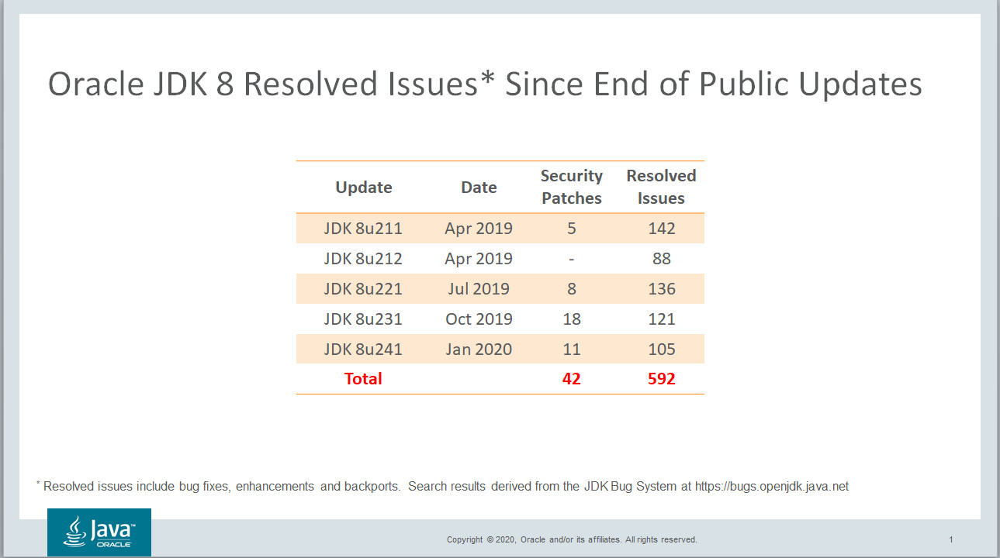

Despite the fact that JDK 8 was introduced nearly six years ago
(March 2014) and Oracle ended public support for JDK8 in January
2019, JDK 8 still remains the most popular Java release. According
to a
recent survey of nearly 400 developers, nearly 60% of
respondents continue to use Java 8 as their main version.
Working with all manner of Java users and developers on a daily
basis, I humbly believe the above mentioned survey results for
Java 8 are on the low side. Why? Although developers
are an enormously important lot, they only represent a small
portion of the overall Java population. Developers by their
very nature are more likely to be on the technological cutting
edge whereas regular administrators, managers and users of Java
applications tend more towards mainstream releases. And that
release is unquestionably JDK 8.
This past Tuesday, 14 January 2020 effectively marks the one year anniversary of the post EoPU (End of Public Update) era for Oracle JDK 8. Oracle provided support and updates to JDK 8 for approximately five years and just like every other previous release dating back to the first Java release in 1996, ultimately ended public support in order to move on to newer releases. That being said Oracle continues to update JDK 8 for it's commercial customers and will continue to do so until at least March 2025.
So what's changed since the January 2019 End of Public Update announcement? Oracle has released four quarterly Critical Patch Updates (CPUs), the most recent being on 14 January 2020. In that time span hundreds of bug fixes, enhancements and backports have been incorporated into the platform including 42 patched security vulnerabilities. Without question, the vulnerability count will increase over time. If you're going to remain on JDK8 for the foreseeable future, as seems to be the case with an overwhelming number of organizations, is your organization aware of the security risks of older public versions? Might you have an interest in alleviating those risks by running a more secure update?
